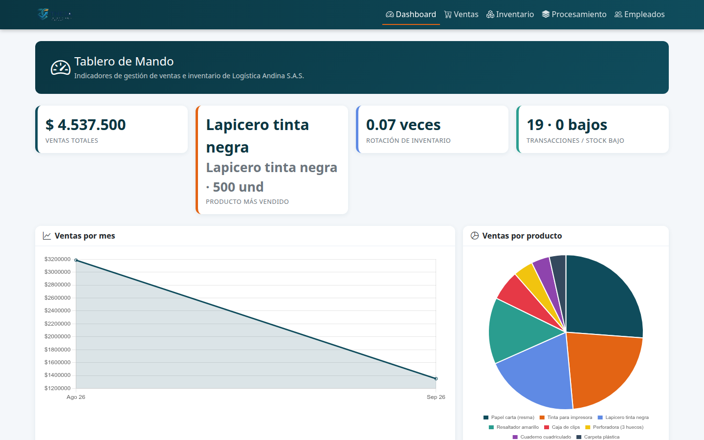
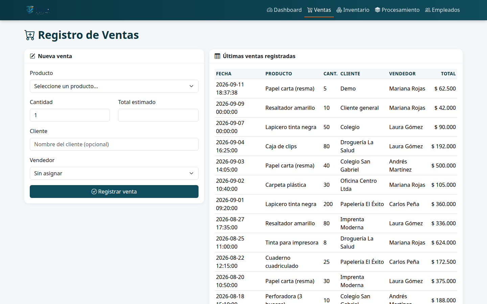
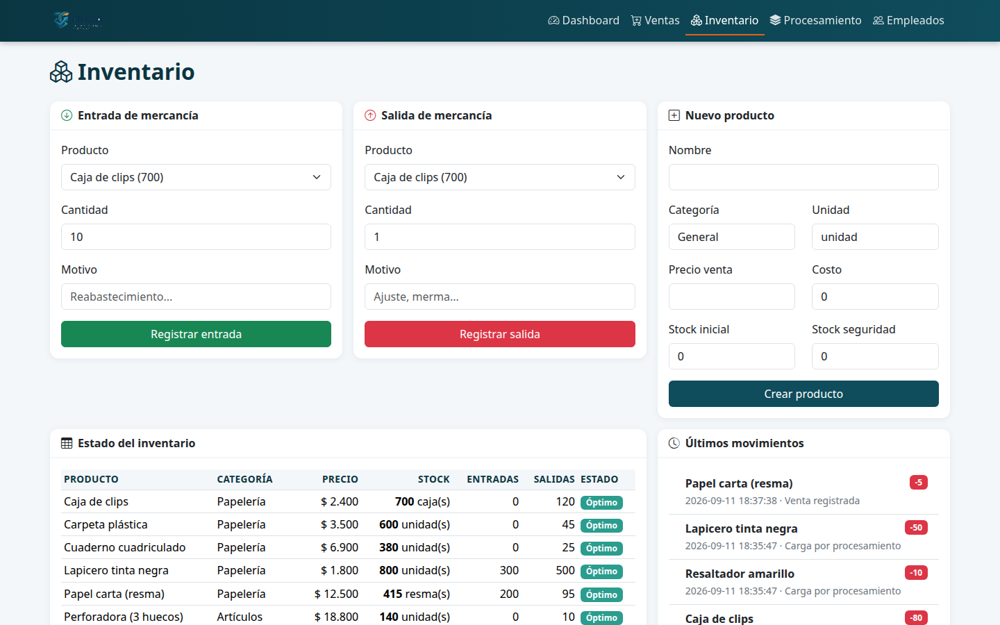
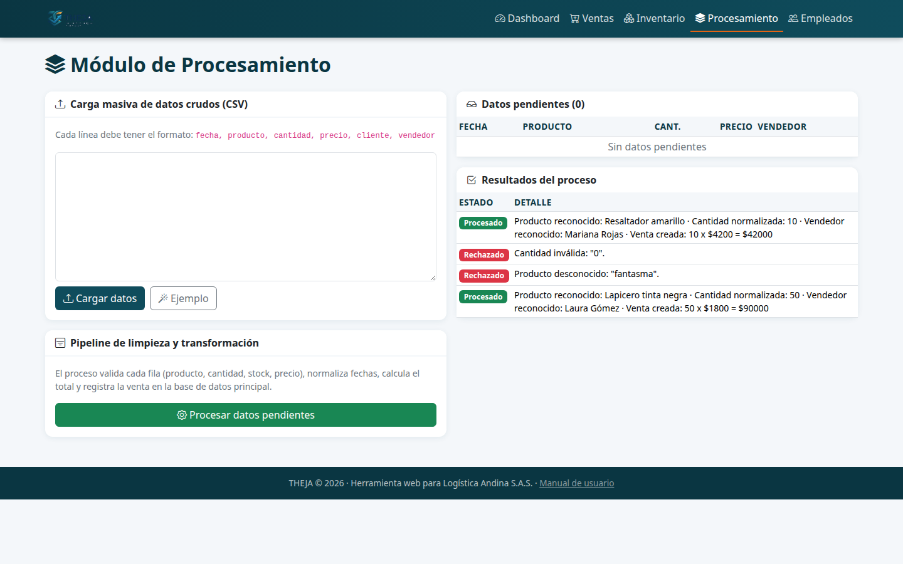
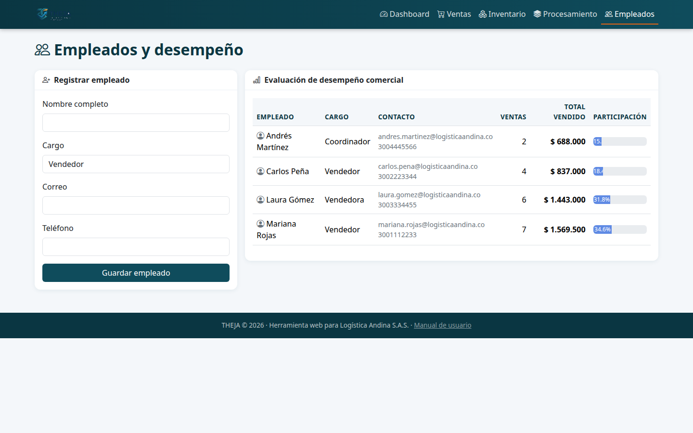
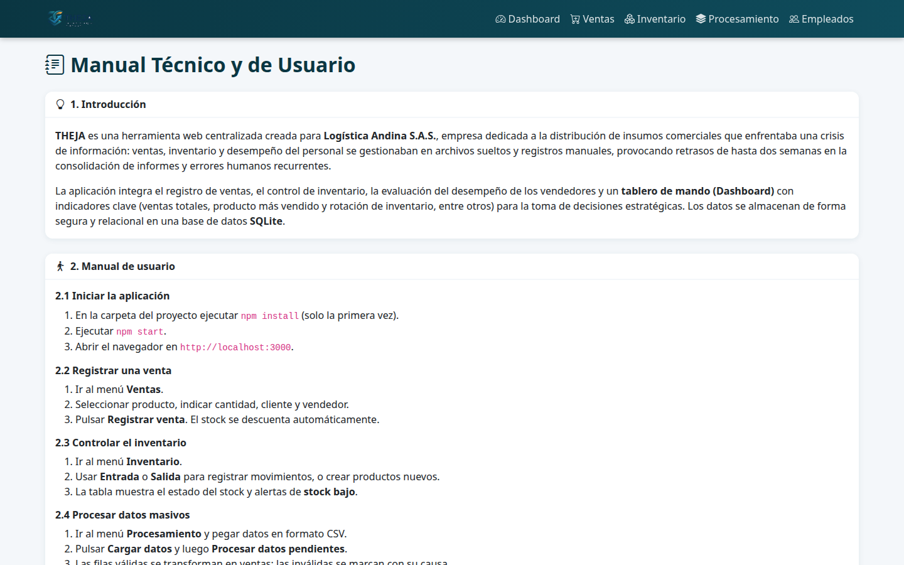

Manual Técnico y de Usuario
Instructivo completo de uso de la aplicación, con capturas y especificaciones técnicas. Proyecto ACA · Corte 3 · Opción B · Logística Andina S.A.S.
Logística Andina S.A.S. es una empresa colombiana de distribución de insumos comerciales que enfrentaba una crisis de información: ventas, inventario y desempeño del personal se manejaban en archivos sueltos y registros manuales, con retrasos de hasta dos semanas para consolidar informes, errores humanos recurrentes y pérdida de oportunidades por no poder analizar los datos en tiempo real.
THEJA es la solución centralizada: una herramienta web que integra el registro de ventas, el control de inventario, el desempeño de los vendedores y un tablero de mando con indicadores clave, almacenando la información en una base de datos relacional SQLite con integridad garantizada (claves foráneas, restricciones y transacciones). La interfaz nunca modifica la base de datos directamente: solo consume servicios API, garantizando una arquitectura de 3 capas.
2.1 Iniciar la aplicación
- En la carpeta del proyecto ejecutar
npm install(solo la primera vez). - Ejecutar
npm start. - Abrir el navegador en
http://localhost:3000.
La base de datos se crea vacía en la primera ejecución: productos, empleados y ventas se
ingresan manualmente desde la aplicación. Si desea recuperar datos de ejemplo, revise
database/seed.sql (opcional).
2.2 Tablero de mando (Dashboard)
La pantalla principal muestra los indicadores de gestión y los gráficos para la toma de decisiones:

- Tarjetas de ventas totales, producto más vendido, rotación de inventario y transacciones / alertas de stock bajo.
- Gráficos de ventas por mes, ventas por producto y desempeño de vendedores.
- Tabla de ventas recientes para el monitoreo diario.
2.3 Registrar una venta

- Ingrese al menú Ventas.
- Seleccione el producto; se muestran su precio y el stock disponible.
- Indique la cantidad (número entero). El total estimado se calcula automáticamente.
- Opcionalmente escriba el cliente y seleccione el vendedor.
- Pulse Registrar venta.
El servidor valida que el stock sea suficiente, descuenta el inventario y registra el movimiento de salida de forma automática y atómica (transacción). No se puede modificar la base de datos directamente.
2.4 Controlar el inventario

- Entrada de mercancía: seleccione el producto, la cantidad y el motivo (reabastecimiento). El stock aumenta.
- Salida de mercancía: seleccione el producto, la cantidad y el motivo (ajuste, merma). El stock disminuye y se valida que no supere el disponible.
- Nuevo producto: cree productos con nombre, categoría, unidad, precio de venta, costo, stock inicial y stock de seguridad.
- La tabla muestra el estado del stock con alertas de Stock bajo (stock ≤ stock de seguridad) u Óptimo, junto con el historial de movimientos.
2.5 Módulo de procesamiento (limpieza y transformación)

- Ingrese al menú Procesamiento.
- Pegue datos en formato CSV, una fila por línea:
fecha, producto, cantidad, precio, cliente, vendedor(puede pulsar Ejemplo para cargar datos de prueba). - Pulse Cargar datos: las filas quedan como datos pendientes.
- Pulse Procesar datos pendientes: el sistema valida y normaliza cada fila y, si es válida, la registra como venta descontando el stock. Las filas inválidas se marcan Rechazada con su motivo.
| Entrada cruda | Resultado |
|---|---|
09/09/2026, lapicero tinta negra, 50, 1,800, Colegio, Laura Gómez | Venta creada (precio y fecha normalizados) |
09/09/2026, producto fantasma, 5, 999, , Pepe | Rechazada: producto desconocido |
09/09/2026, Cuaderno cuadriculado, 0, 6900, , | Rechazada: cantidad inválida |
2.6 Empleados y desempeño

- Ingrese al menú Empleados.
- Registre personal nuevo (nombre, cargo, correo, teléfono).
- La tabla presenta el desempeño comercial (número de ventas, total vendido y participación) para la evaluación del personal.
2.7 Este manual dentro de la aplicación

3.1 Arquitectura
Navegador (HTML5 + Bootstrap 5 + Chart.js)
│ HTTP / JSON
▼
Express (API REST)
├─ src/api.js → endpoints de productos, ventas, movimientos, empleados y datos crudos
├─ src/pipeline.js → limpieza y transformación de datos masivos
└─ src/db.js → conexión SQLite, esquema y datos semilla
▼
SQLite (database/theja.db)
- Backend: Node.js ≥ 22.5, Express 4.
- Base de datos: SQLite mediante el módulo nativo
node:sqlite(sin dependencias de compilación). - Frontend: HTML5 + CSS + JavaScript, Bootstrap 5 y Chart.js (archivos locales en
public/vendor/, sin depender de internet).
3.2 Modelo de datos
| Tabla | Descripción |
|---|---|
productos | Catálogo con precio de venta, costo, stock actual y stock de seguridad |
ventas | Registro de ventas; el total se calcula en el servidor |
movimientos_inventario | Entradas y salidas de mercancía, ligadas a ventas o manuales |
empleados | Personal de la empresa |
datos_crudos | Datos en bruto del procesamiento (estados: pendiente / procesado / error) |
PRAGMA foreign_keys = ON(claves foráneas activas).- Restricciones
CHECK (cantidad > 0)yCHECK (tipo IN ('entrada','salida')). - Transacciones SQL para ventas y movimientos: inserción de la venta y descuento de stock como operación atómica.
- Validación en el servidor: totales calculados con el precio del catálogo, validación de stock, existencia de producto/vendedor y cantidades enteras.
- Entradas inválidas (JSON o validación) responden HTTP 400 con mensajes claros, nunca errores internos 500.
3.3 Fórmulas y algoritmos
- Total de la venta:
total = cantidad × precio_unitario(precio desde el catálogo). - Rotación de inventario:
Σ(cantidad vendida × costo) / Σ(stock actual × costo). - Producto más vendido:
SUM(cantidad)por producto, orden descendente, límite 1. - Fechas:
dd/mm/aaaaodd-mm-aaaa→aaaa-mm-dd HH:MM:SS. - Números: soporta formatos colombianos: separadores de miles con punto (1.800) o coma (1,800), decimales con coma (1,80) y símbolo de moneda ($2.500); se normaliza antes de guardar.
- Alertas:
stock_actual ≤ stock_seguridad⇒ "Stock bajo".
3.4 API REST
| Método | Endpoint | Descripción |
|---|---|---|
| GET | /api/resumen | Indicadores para el tablero de mando |
| GET | /api/productos | Catálogo de productos |
| POST | /api/productos | Crear producto |
| GET | /api/ventas | Listar ventas |
| POST | /api/ventas | Registrar venta (descuenta stock en transacción) |
| GET | /api/inventario | Estado del inventario con entradas/salidas |
| GET | /api/movimientos | Historial de movimientos |
| POST | /api/movimientos | Entrada o salida de mercancía |
| GET | /api/empleados | Empleados y desempeño |
| POST | /api/empleados | Registrar empleado |
| GET | /api/crudos | Datos pendientes y resultados del proceso |
| POST | /api/crudos/cargar | Cargar filas CSV como datos pendientes |
| POST | /api/procesar | Ejecutar limpieza y transformación |
Durante el desarrollo se usó IA generativa como apoyo, siguiendo el método CTF (Contexto, Tarea, Formato). Ejemplos de prompts empleados:
- "Soy estudiante de Análisis y Desarrollo de Software. Crea una API REST en Node.js con Express y SQLite (
node:sqlite) para Logística Andina S.A.S., una distribuidora de insumos. Debe permitir registrar ventas, controlar inventario con entradas/salidas y usar transacciones para que el descuento de stock sea atómico." - "Diseña un tablero de mando con Bootstrap y Chart.js que muestre ventas totales, producto más vendido, rotación de inventario, ventas por mes y desempeño de vendedores."
- "Al enviar cantidades decimales la venta se registra mal. ¿Cómo valido que la cantidad sea un número entero positivo y devuelva un error 400 en lugar de aceptar el dato corrompido?"
- "Redacta el manual técnico y de usuario de una aplicación web de gestión de ventas e inventario con introducción, instrucciones paso a paso con capturas y especificaciones técnicas."
La IA fue una herramienta de apoyo: cada resultado se revisó, adaptó y probó. Todo el código, las validaciones y las pruebas fueron verificadas manualmente.